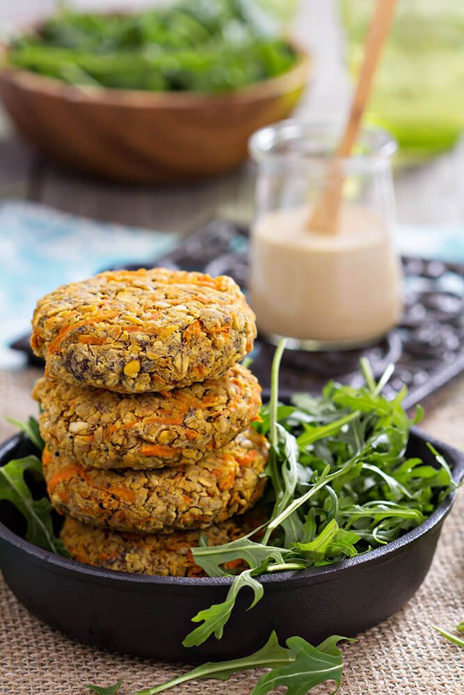
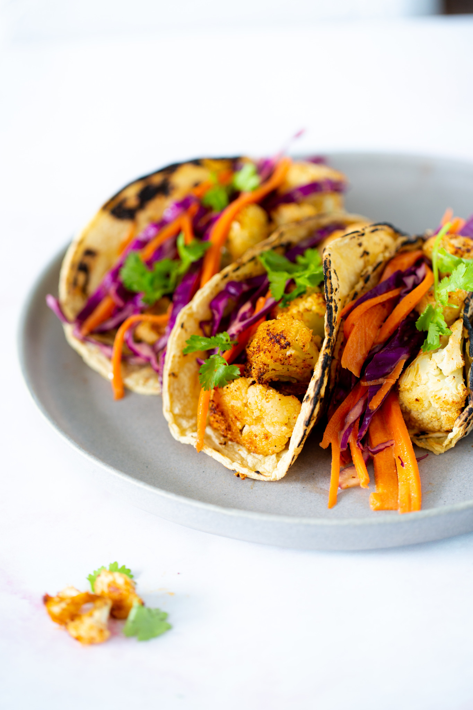

Pasta con Salsa de Aguacate
Una pasta cremosa con salsa de aguacate, tomate cherry y albahaca fresca.
- 200g de pasta
- 2 aguacates maduros
- 1 taza de tomate cherry, cortados a la mitad
- 1 diente de ajo, picado
- 2 cucharadas de jugo de limón
- 1/4 taza de albahaca fresca, picada
- Sal y pimienta al gusto
- Aceite de oliva
Instrucciones:
- Cocina la pasta según las instrucciones del paquete.
- En una licuadora, mezcla los aguacates, el ajo, el jugo de limón, la sal y la pimienta hasta obtener una mezcla suave.
- En una sartén grande, calienta un poco de aceite de oliva y saltea los tomates cherry durante unos minutos.
- Agrega la pasta cocida y la salsa de aguacate a la sartén, mezcla bien.
- Decora con albahaca fresca antes de servir.

Burger Vegana de Garbanzos
Una deliciosa hamburguesa vegana hecha con garbanzos, cebolla, ajo y especias.
- 400g de garbanzos cocidos
- 1/2 cebolla, picada
- 2 dientes de ajo, picados
- 1 zanahoria rallada
- 1/4 taza de pan rallado
- 2 cucharadas de harina
- 1 cucharadita de comino en polvo
- Sal y pimienta al gusto
- Aceite de oliva
Instrucciones:
- En un procesador de alimentos, mezcla los garbanzos, la cebolla, el ajo, la zanahoria, el pan rallado, la harina, el comino, la sal y la pimienta hasta obtener una mezcla homogénea.
- Forma hamburguesas con la mezcla.
- Calienta un poco de aceite en una sartén y cocina las hamburguesas hasta que estén doradas por ambos lados.
- Sirve en pan de hamburguesa con tus toppings favoritos.

Tacos de Coliflor Asada
Tacos crujientes rellenos de coliflor asada, guacamole, salsa de tomate y cilantro.
- 1 cabeza de coliflor, cortada en floretes
- 2 cucharadas de aceite de oliva
- 1 cucharadita de comino en polvo
- 1 cucharadita de pimentón ahumado
- 1/2 cucharadita de ajo en polvo
- 1/2 cucharadita de cebolla en polvo
- 1 lata de frijoles negros, enjuagados y escurridos
- 1/4 taza de cebolla roja, picada
- 1 aguacate, en rodajas
- 1/4 taza de cilantro fresco, picado
- 8 tortillas de maíz
- 1 lima, cortada en gajos
- Sal y pimienta al gusto
Instrucciones:
- Precalienta el horno a 200°C (400°F).
- En un tazón grande, mezcla los floretes de coliflor con el aceite de oliva, el comino, el pimentón ahumado, el ajo en polvo, la cebolla en polvo, la sal y la pimienta.
- Extiende la coliflor sazonada en una bandeja para hornear y ásala en el horno durante 25-30 minutos, o hasta que esté dorada y tierna.
- Mientras tanto, en una sartén grande, calienta un poco de aceite y saltea la cebolla roja hasta que esté suave.
- Agrega los frijoles negros a la sartén y cocina hasta que estén bien calientes.
- Calienta las tortillas de maíz en una sartén o en el microondas.
- Para armar los tacos, coloca una porción de coliflor asada en cada tortilla, agrega frijoles negros, rodajas de aguacate y cilantro fresco.
- Exprime un poco de jugo de lima sobre los tacos antes de servir.